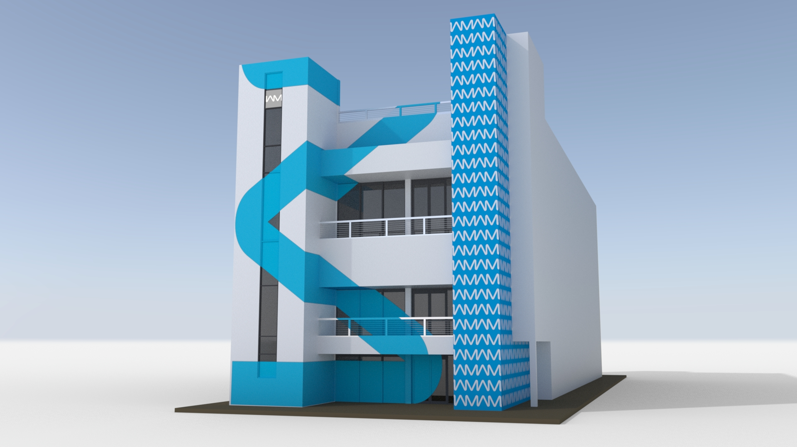
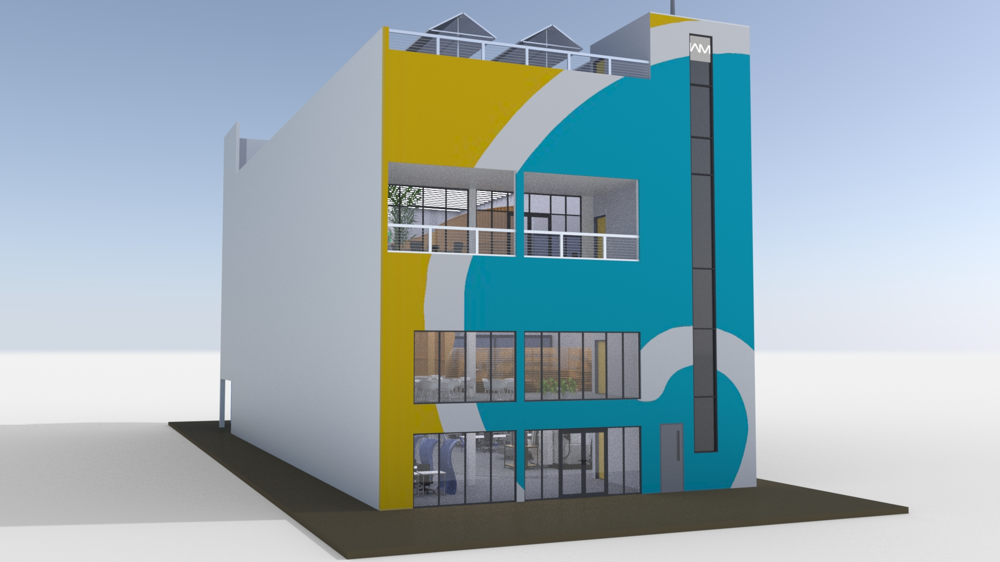
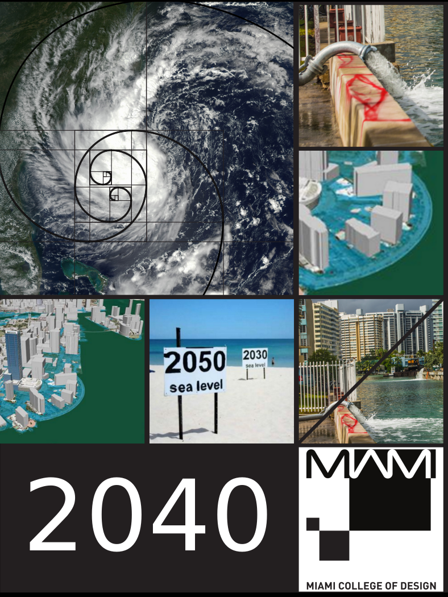

The Miami College of Design is the culmination of the dreams of two leaders in industrial design and design education, Franco Lodato and Walter Bender.
Franco Lodato is a renowned industrial designer for Motorola, Herman Miller, Ferrari-Maserati, Pininfarina and other global enterprises. He is also the founder and principal of iBionics and chief product Innovation of Skylabs.
Walter Bender is a founding member and former Executive Director of the MIT Media Lab, co-founder of One Laptop per Child, and founder of Sugar Labs, an organization that provides educational software to children around the world.
Lodato and Bender as collaborators at MIT in the 1990s observed that design and technology were closely integrated in the development of new products. Consequently, the ability to deliver interdisciplinary education has become more essential than ever before.
Lodato and Bender realized they could create an innovative college where students could interact with design principles and also with the natural sciences, material sciences, computing, communications, and structural engineering.
This innovative education concept got the attention of Antonio Malavé. Mr. Malavé is a serial entrepreneur in the Miami area where he focuses on real estate project development. He is an expert in organizational and operational management and therefore assumed the role of Chief Operating Officer and part owner. He is responsible for daily operations, resource management, and strategic planning.
Miami College of Design was created to support the future leaders in design and innovation. Our students interact with design principles in concert with the natural sciences, material sciences, computing, communications, and structural engineering.
Our mission is to prepare students to assume positions of influence and global leadership in industry and to be instrumental in the creation of the next generation of strategic, innovative, and entrepreneurial businesses.
Our objective is to create a learning environment in which students work side-by-side with leading-edge designers, immersed in professional practice, to create disruptions and, consequently, opportunities for innovation.
We seek to advance the integration of design, science, and engineering, exploring new approaches and solutions through experience design. We value active learning, exploration, creativity, breakthrough innovation, and the use of technology and applied design, all of which serve to advance the quality of the human experience.
In today's competitive landscape, where high-technology businesses are becoming the common paradigm, innovation is crucial. To nurture talent, we must create learning environments in which there is creative tension between a shared vision (stability) and open-ended risk taking (instability). From these environments, top students will emerge who can innovate from chaos.
These students will generate long-term value through the development of distinctive products; they will be instrumental in the creation of the next generation of strategic businesses as they contribute with disruptive, breakthrough innovation leadership.
Graduates of the college will have strong skills in applying theory to the creation of new product development. Hands-on courses focused on industrial design provide many opportunities. The program combines expertise in the foundations of design and technical expertise. This is central to best practices of the application, development, and use of technologies throughout an industrial designer’s lifetime. Graduates will generate long-term value through the development of distinctive products; they will be instrumental in the creation of the next generation of strategic businesses as they contribute with disruptive, breakthrough innovative leadership.
Graduates will be prepared to seek entry-level employment in careers as industrial designers, product designers, creative directors, and user-interface, and user-experience designers. These positions are typically found in the Industrial Design industry as well as in the product-development divisions of the manufacturing and services industries.
The policy of Miami College of Design of equal opportunity employment, consistent with all applicable federal and state laws, is that no person shall, on the grounds of race, creed, color, handicap, national origin, sex, sexual orientation, marital status, age, political affiliation, or belief, be excluded from any training, be denied the benefit of training, or be subjected to discrimination in any hiring practice or activity at the campus.
Miami College of Design complies with the Rehabilitation Act of 1973 (Section 504) requiring that no qualified handicapped person will be excluded by reason of the handicap from enrolling in a course of instruction. Students wishing to avail themselves of accommodations under the Americans with Disabilities Act must disclose special needs at the time of enrollment. Accordingly, every effort is made to make reasonable adjustments/accommodations. Please consult the college Admissions Office for further information. Students with disabilities may qualify for additional services/assistance. Students may call our main office and contact the Admissions Director of Miami College of Design.
Miami College of Design, LLC is licensed by the Commission for Independent Education, Florida Department of Education. Additional information regarding this institution may be obtained by contacting the Commission at 325 West Gaines Street, Suite 1414, Tallahassee FL 32399-0400. (850) 245-3200, toll-free telephone number: (888) 224-6684.
License # 5611
Miami College of Design, LLC, reserves the right to change programs, start dates, tuition, or to cancel programs. Any changes will be made in accordance with the Florida Commission for Independent Education rules and regulations and will be stapled to this catalog and students will be notified of changes. Students will abide by the rules and regulations of the catalog published at the time of their enrollment.
Degree Awarded: Bachelor of Science
Calendar Type: Semester
Total Credit Hours: 145
Occupational Information and Program Objectives
The Bachelor of Science major in Industrial Design and Technology (IDT) prepares students in the knowledge and skills needed to advance the integration of design, science, and engineering, exploring new approaches and solutions through experience design. Students learn interdisciplinary skills and theory necessary to design, develop, and implement technology-enhanced products for a variety of fields and settings while working side-by-side with leading-edge practitioners.
Graduates of the program will have strong skills in applying theory to the creation of new product development. With hands-on courses focused on industrial design, the program combines expertise in the foundations of design and technical expertise that is central for best practices of the application, development, and use of technologies throughout their lifetimes.
Graduates will generate long-term value through the development of distinctive products; they will be instrumental in the creation of the next generation of strategic businesses as they contribute with disruptive, breakthrough innovation leadership.
Graduates will be able to:
Upon graduation students will have amassed a portfolio that documents and demonstrates these abilities.
Graduates will be prepared to seek entry-level employment in careers as industrial designers, product designers, creative directors, and user-interface, and user-experience designers. These positions are typically found in the Industrial Design industry as well as in the product-development divisions of the manufacturing and services industries.
Program Description
The curriculum combines visual and computational thinking to push the boundaries of design, while exploring new approaches and solutions. Internship experiences include work with local and international corporate partners.
Students experience learning in various ways such as:
At the Miami College of Design, student learning crosses boundaries of research and practice emphasizing originality and creativity based on 21st Century Learning Skills including:
Work across these themes is coordinated to facilitate the development of expertise linking theory and practice in the design process. Students have the opportunity to select areas of emphasis or concentration in the field of industrial design. These include: Entrepreneurship. Aging. Health, Industrial Design, Marine Sciences, Robotics, Sports Technology, Transportation, and “Wearables.”
Courses
Students enrolled in the Associate of Science program must complete 30 credit hours of general education.
Degree Awarded: Associate of Science
(A.S.) Calendar Type: Semester
Total Credit Hours: 65
Occupational Information and Program Objectives
The Associate of Science major in Industrial Design Technology (IDT) prepares students in the skills needed to understand the integration of design, science, and engineering, exploring new approaches and solutions through experience design. Students learn interdisciplinary skills and theory necessary to design, develop, and implement technology-enhanced products for a variety of fields and settings while working side-by-side with leading-edge practitioners.
Graduates of the program will have skills in applying theory to the creation of new product development. With hands-on courses focused on industrial design, the program combines expertise in the foundations of design and technical expertise that is central for best practices of the application, development, and use of technologies throughout their lifetimes.
Upon graduation students will have gained experience in the design of software, devices, and/or web applications, as well as the start of a portfolio that demonstrates their abilities. They will also have elementary skills to assist with research, product design, and rapid prototyping as well as skills in critiquing and collaboration, written and verbal communication, and presentation skills. Graduates will be prepared to seek assistant-level employment in industrial and product design, and user-interface, and user-experience designers. These assistant-level positions are typically found in the Industrial Design industry as well as in the product-development divisions of the manufacturing and services industries.
Program Description
The curriculum combines visual and computational thinking to push the boundaries of design, while exploring new approaches and solutions. Internship experiences include work with local and international corporate partners.
Students experience learning in various ways such as:
Courses
Students enrolled in the Associate of Science program must complete 15 credit hours of general education.

Miami College of Design is located in the Historic Art District of Wynwood just a few blocks from the famous Wynwood Walls. The campus is located in a three-story 20,000 square foot stand-alone building with a student lounge, library area, and open classrooms. The building was renovated in mid-2016 using innovative design and space concepts.
Classroom, office and lab space are located on the first, second, and third floors of the building. Each is structured as “open floors” with industry-specific machine shops located in open self-contained areas. Tables, chairs, and dividers are all movable so that lab and classroom space can be created as needed and as required by the demands of the courses being taught. There are five (5) closed offices, and one 15x35 space for Executive offices. One area is designated for computers. A 15x12 space is designed for servers. There are three 12x12 faculty offices, an open student lounge, where the library and library computer workstations are located, and a 30x12 meeting/conference room. Restrooms are located on all floors. The roof holds solar panels and wind turbines. Part of the roof is enclosed to create a closed area where there are eating, recreation, and meeting rooms.
Miami College of Design is located in a busy Art District that accommodates the parking needs of its thousands of daily visitors and business people. Building permits are granted based on following the parking calculations for Miami-Dade T-5 zoning, which outlines required parking for the school. There are 150 leased parking spaces available to faculty, staff, and students from public parking lots in the area. Additional parking is leased from public parking lots as enrollment grows. Miami College of Design is not responsible for items left in a student’s car or for any towing charges if students have illegally parked.
The Miami College of Design has met all requirements, certification, licenses, and insurances to operate and conduct all business in the City of Miami, Miami/Dade County, and the State of Florida.
All equipment needed to support the teaching of each subject is available. There are labs on site and also in nearby buildings. Examples of equipment include but are not limited to the following:
Students at Miami College of Design will have access to state-of-the-art software tools. The College puts an emphasis on Free/Libre Software in order to ensure that students not only learn how to use tools, but also how the tools themselves are designed.
The campus’s resource center contains instructional videos and journals, texts, and technical manuals. Miami College of Design has established an on-line library with LIRN that provides ample resources related to its programs of study and related employment and training. Students and instructors may use all resource materials and assigned computers for academic purposes and research while on campus when class is in session and offices are open. Students, faculty, and staff also have access to on-line library resources from any location.

Franco Lodato
Master of Science
Bio-Design
European Institute of Design
Milan, Italy
Antonio Malavé
Masters of Science
Advanced Defense Studies
Insituto de Alto Estudios de la Defensa Nacional
Caracas, Venezuela
Walter Bender
Master of Science
Visual Studies
Massachusetts Institute of Technology
Cambridge, MA
Ann Berger Valente
Ph.D. in Medical Science
Universidade Estadual de Campinas
Campinas, Brazil
You may be in your junior or senior year in high school thinking about college. Or, you might be in the workplace considering another career or how to enhance your current opportunities in Industrial Design. Therefore, ask yourself if you are ready to join a class of students who will work as a team on a series of interdisciplinary specialties (Robotics, Marine Science, Sports Technology, Transportation Design, and more). We seek individuals who have the training, stamina, and passion for a rigorous, immersive program. We seek students who can add useful and intriguing elements to the team, from a sense of humor to compelling work experiences to a wide range of individual gifts, talents, interests, and achievements. Our ideal and diverse team includes capable people who will support, surprise, and inspire each other. Is this you?
Preparing you for Miami College of Design as a high school student:
Preparing yourself if you are currently in the workplace:
Please keep in mind that all courses are offered only in English.
Students seeking admission must fulfill the following requirements:
Results of the SAT Reasoning Test or the ACT (American College Testing program) are not required for admission to the Miami College of Design.
You can contact us by email at:
admissions@miamicollegeofdesign.com
or through regular mail to:
Office of Admissions
Miami College of Design
7950 NW 53rd St. Suite 337
Miami, FL 33166
The Application process for the Miami College of Design is intended to discern a beneficial and rewarding match between the candidates and the College’s unique learning environment. With this in mind, the application process consists of the following mandatory elements:
The criteria for acceptance into the program are based on a multi-dimensional metric. This includes:
Admissions decisions will be made on a rolling basis, generally within one month following the completion of all items on the Application Checklist and review by the Admissions Committee.
Upon acceptance, there are two documents which constitute a binding contract between the student and Miami College of Design: (1) the College Catalog, which students receive one week prior to enrollment; and (2) the Enrollment Agreement, containing your obligations with the College. Please read both documents carefully prior to signing the Enrollment Agreement.
Some credit hours may be evaluated and considered towards program completion. The applicant must present a transcript and catalog from the institution where the courses were completed. The institution must be accredited by a national or regional accrediting agency and the grade must be a “B” or higher. Students must complete at least 50% of their course work at Miami College of Design in order to receive a degree. Tuition will be prorated.
Students may wish to continue their training after graduation. While Miami College of Design is licensed by the Florida Commission for Independent Education, it is not accredited. Some or none of the course work completed at Miami College of Design may be transferable to other institutions. Therefore, the student must contact the institution s/he is transferring to as each institution has its own requirements regarding acceptance of transfer of credit hours. There is no guarantee of transfer of credit hours from one institution to another and specifically from Miami College of Design to any other post-secondary school or college.
Miami College of Design accepts up to 15 credit hours of life experience. Applicants must select courses for which they seek life experience credit. For each course, applicants must show how their specific experience meets the objectives of that course. This is done by completing forms, provided by the school, and including examples of work, job descriptions, and/or testimonials from employers. The Life Experience Application Package is reviewed by the Admissions Officer. When complete, then the Application package is submitted to a Life Experience Review Committee. Tuition for courses accepted for Life Experience credit will be prorated.
Tuition is due at the time of registration for each semester. The fee is US $1020 per semester credit-hour unit. The total cost of tuition for the bachelor’s degree is US $147,900 (145 credit hours). The total cost of tuition for the associate’s degree is US $66,300 (65 credit hours). Tuition includes the cost of instructors and administration, as well as internships, mentoring, and student services. Qualified students will receive a scholarship for up to 90% of tuition only (Please refer to the Industrial Arts & Method Scholars Program Section below).
There is a one-time US $25 nonrefundable application fee due at the time of application. The application fee must be paid either by credit card or in the form of a personal check, cash, or money order made payable to Miami College of Design. This is the responsibility of the applicant.
The price of learning materials, equipment, and supplies varies, with an average cost of US $75 per course. These costs are the responsibility of the student.
Miami College of Design seeks to attract the most talented students both in and out of the State of Florida. The goal is to train talented individuals who will become innovators in their communities. Our focus is to deeply involve the local and greater industrial design communities to gain their support in the education of students who can one day make a difference to these organizations.
Our approach to student tuition assistance is to involve industry partners by establishing the Industrial Arts & Method Scholars Program. The program details include:
To the extent that funds are available, tuition awards will be granted to each qualified student who is accepted into the Scholars Program. These are students who meet both the admission and the Scholars requirements. The awards program, known as Industrial Arts & Method Scholars Program, is an example of the innovative approach to post-secondary education tuition assistance developed by Miami College of Design. Up to 90% of tuition for qualified students will be paid through the scholars program. Students must qualify annually for scholarships while enrolled in either the Associate's or Bachelor’s degree programs.
There are Industrial Arts & Method Scholarships available for 2017, which will be awarded based on both merit and means. Students who are awarded scholarships will be responsible for at least 10% of tuition. For example: If a student enrolls in 18 credit hours in a semester, the total tuition for that semester is US $18,360. A 90% scholarship recipient will be responsible for US $1,836 of that total. A 50% scholarship recipient will be responsible for US $9,180 of that total. Students who are not awarded scholarships will be responsible for 100% of tuition as described in the Tuition Section above.
All students are responsible for their portion of tuition as decribed above, the one-time application fee of US $25, and learning materials, equipment, and supplies, which have an average cost of US $75 per course.
All applicants to the College and currently enrolled students in good standing are eligible to apply for the Scholars Program on an annual basis. New students will be considered for the program based upon their application for admission to the College as described in the Admissions Procedures and Requirements section of the Catalog. Currently enrolled students applying to the Scholars program must include examples of work from previous semesters. Continuing students may invite people to write letters of recommendation from College faculty and their mentors from industry.
All Scholar applicants will have a face-to-face, in person or electronic interview. During the interview, applicants will be asked to discuss their experience working as part of a design team.
Decisions regarding acceptance into the Scholars Program, as well as the percentage of tuition to be covered by the Scholars Program will be made within one month of the review by the Scholars Program Committee. This will be at least one month prior to the due date for submission of the enrollment agreement by new students for the semester in which they intend to enroll. Continuing students will be informed of their scholarship status three months prior to the Fall Semester.
In addition to the standard admission process, students must prove to the Admissions Committee that they are highly qualified, goal-oriented, and committed to completion of their assigned work.
A minimum cumulative grade average of 3.0 and enrollment of at least 9 credits per semester.
Scholarships are awarded to as many qualified students as possible based on available scholarship funding.
Amount of the scholarship. | The Scholarship covers up to 90% of tuition for those who qualify. |
Programs that qualify | The Scholarship applies to both the B.S. and A.S. degree programs. |
Submissions required | Complete the entire Admissions process as described in the Admissions and Procedures requirements section. |
Process for student selection. | The Scholars Program Committee makes the final scholarship decisions according to the criteria listed on the Admissions Page. |
Requirements to maintain the scholar award. | Students must maintain satisfactory academic standing (See Satisfactory Academic Progress in the Academic Policies Section on Page 24 of the Catalog). |
Number of scholarships awarded. | Qualified students (those who meet admissions and scholarship criteria) will be awarded the scholarship subject to available funds. |
Additional scholarship information. | Detailed information about the scholarship program is found under the Admissions Procedures and Requirements Section. |
Items not covered by the scholarship | One-time application fee; Books and learning materials; a minumum of 10% of tuition. |
What if no funds are available to enrolled students to continue the next semester(s)? | If no scholarship funds are available, students will be responsible for 100% of tuition. |
What financing is available to assist students to pay for the tuition not covered by a scholarship? | Miami College of Design has arranged with tuition-lending companies for students to seek tuition loan assistance. |
What financing is available to assist students who did not qualify for the scholarship? | Miami College of Design has arranged with tuition-lending companies for students to seek tuition loan assistance. |
Will tuition paid by the student be covered by the Refund Policy? | Yes (See the Refund and Cancellation Policy Section below). |
What is the time-frame new and returning students are given as to whether they qualify for the scholarship and the amount? | New students will be told about their scholarship status at least one month prior to the due date for submission of the Enrollment Agreement. Continuing students will be told about their scholarship status three months prior to Registration Day. |
Scholars are awarded scholarship for up to 90% of tuition. Should a Student Scholar drop out or withdraw, the student is due no refund and owes no fees to the school. A student who is not awarded a scholarship and chooses to pay their own tuition, will be subject to the following refund and cancellation policies.
Should a student’s enrollment be terminated or canceled for any reason, all refunds will be made according to the following refund schedule. This applies to students who did not qualify for a scholarship and are paying tuition in cash.
Should a course be canceled by the administration for any reason, tuition for that course will be refunded in full to cash paying students. Fees paid for learning materials, equipment, and supplies will not be refunded.

MIAMI 2040 is an unprecedented opportunity for Miami’s youth to engage in solving the problems of the future city they will inhabit. Miami College of Design and high school students from South Florida will design solutions for the most daunting challenges for South Florida facing the next generation. At the end of a series of workshops, in which the students will have worked in teams with world-renowned industrial designers, their proposed solutions will be presented in June at DEEP SEE, a two-week public art installation on the shores of Miami Beach, adjacent to the US Conference of Mayors.
For the third year in a row, a new record for global temperature was set: 2016 was the hottest year ever recorded. Climate change is not just an abstract problem for future generations; it is happening now. Coastal populations are among most vulnerable, and South Florida arguably faces the most pointed risks of any region in the United States for sea-level rise, storm surge, and intensification of hurricanes. As residents of South Florida, we cannot afford to wait for others to fix a problem as complex, massive, and pressing as climate change. We need to take local action.
Beginning on 4 March, high-school students in South Florida will have an opportunity to do something tangible about climate change. Working with the design faculty of the Miami College of Design, workshop participants will engage in a six-week program to design both systemic and specific solutions for one of the first US regions projected to be partially underwater within the next several decades.
Every Saturday morning in March and the first half of April, students will gather in Wynwood to work with the faculty in hands-on sessions. Wednesday evenings, the faculty will hold office hours for fielding questions and for providing additional mentoring.
At the 4 March workshop, students will work with a data scientist, applying models to data from the National Oceanic and Atmospheric Administration (NOAA), National Aeronautics and Space Administration (NASA), and the private sector in order to define the conditions and specific risks that the City of Miami will face in 2040.
In subsequent workshops, the faculty of the Miami College of Design will apply the college’s philosophy of practical learning—learning-by-doing. Students will drive the conversation by identifying the problems they want to work on, self-selecting into design teams, which will be lead through a process of discovery, framing, and prototyping, culminating in a design proposal.
The workshop series will cover the following topics:
Week 1: CLIMATE SCIENCE AND RISK
Week 2: INTRODUCTION TO THE INDUSTRIAL DESIGN PROCESS
Week 2: CONTEXTUALIZING DESIGN IDEAS WITH DATA SCIENCE
Week 3: IDEATION AND RAPID PROTOTYPING
Week 4: ENGAGEMENT WITH PRACTITIONERS
Week 5: TECHNICAL FEASIBILITY STUDIES
Week 6: DOCUMENTATION AND PRESENTATION OF DESIGNS TO CLIENTS
At the end of the workshops, the students will have the opportunity to develop a presentation of their project proposals. At the end of June, they will present their projects at DEEP SEE, a two-week public art installation. They will also present their project proposals to Miami-Dade public officials.
Miami College of Design aspires to engage local high schools, colleges, and community-support organizations in its design process with the goal of the informing potential students of the opportunity to study at the College. Miami College of Design faculty members will host a series of portfolio workshops through March and April to help students prepare their applications to the college, which are portfolio-based. The Dean of Students will also help direct students towards the needs-based scholarship program, which provides up to 90% of tuition for full-time students.
Please contact us by email.
miami2040@miamicollegeofdesign.com
...or sign up with this form.
As your personal portfolio is the key criterion for admission to the College, we offer a series of workshops on how to develop your portfolio. We suggest you take advantage of this resource, come meet the team, and ask your questions.
Sign up for one of the free sessions here.
The porfolio workshops will be held at:
LAB Miami
400 NW 26th St.
Miami, FL 33127
Portfolio sessions are offered on:
02/15, 03/01, 03/15, 03/29, 04/12, and 04/26 from 4–8 PM
and
5/13 from 9AM–5PM